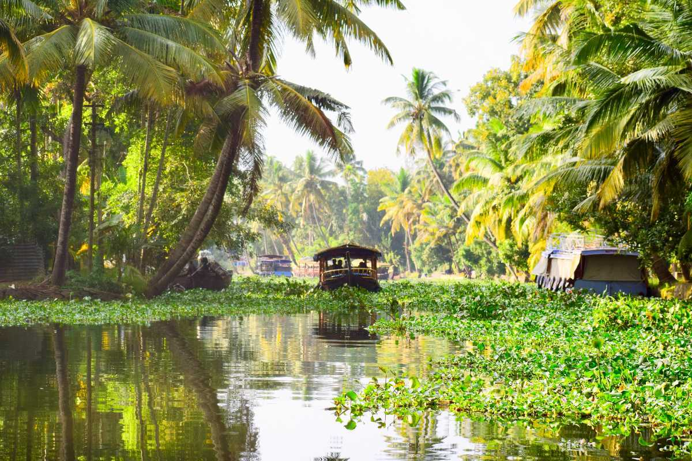
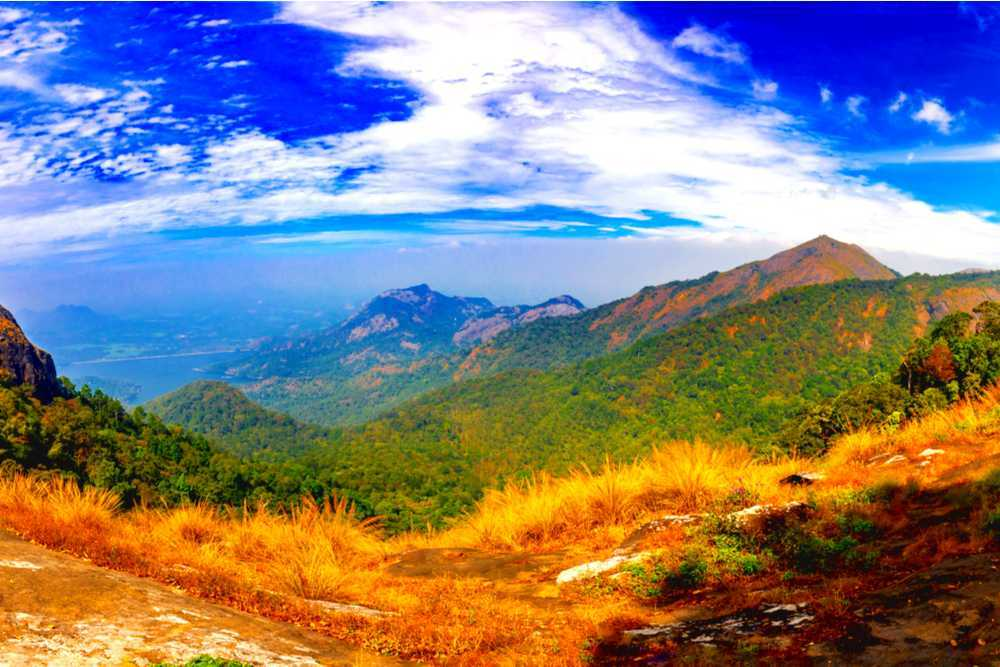
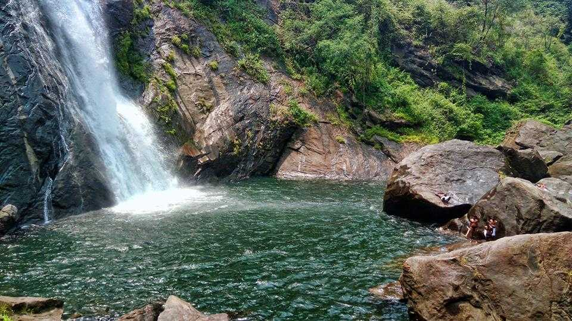
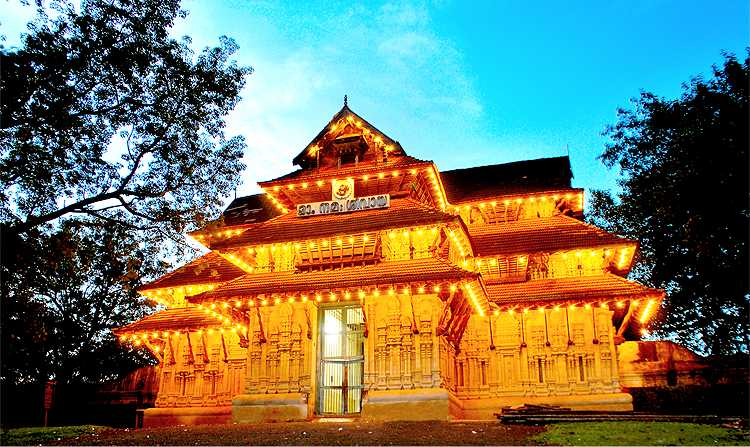
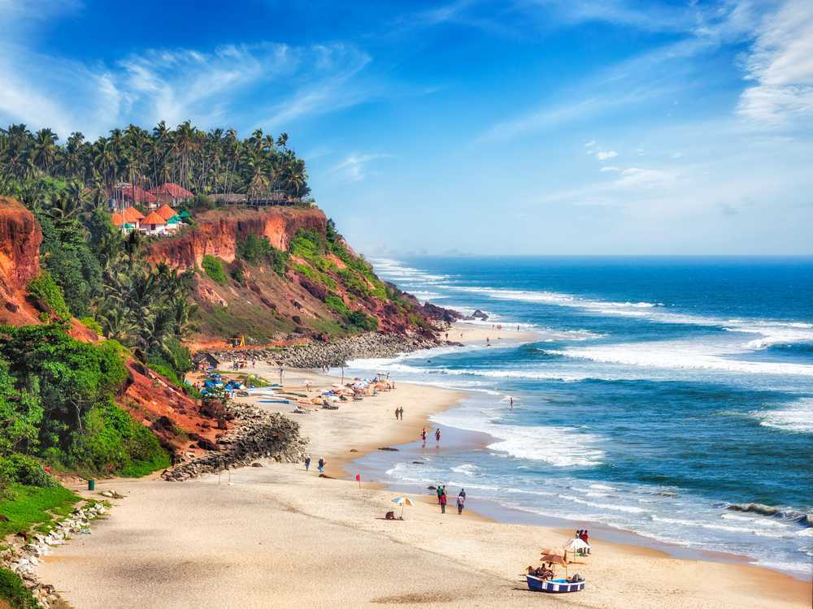
Kerala, located on the southwestern coast of India, is known for its lush landscapes, tranquil backwaters, rich cultural heritage, and high literacy rate. Often referred to as “God’s Own Country,” it boasts a unique blend of tradition and modernity. Historically, Kerala has been a hub of trade and cultural exchange due to its strategic position along the Arabian Sea. Ancient seafarers from Arabia, China, and Europe visited its shores, influencing its culture and economy. The region was home to powerful kingdoms like the Cheras and later came under the influence of colonial powers such as the Portuguese, Dutch, and British. Formed in 1956 through the States Reorganisation Act, modern Kerala was carved out by merging Malayalam-speaking regions, and today it stands out for its progressive social indicators and vibrant tourism industry.The modern state of Kerala was officially formed in 1956 by uniting the Malayalam-speaking regions, and today it is celebrated for its high literacy rate, communal harmony, and strong emphasis on education and healthcare.
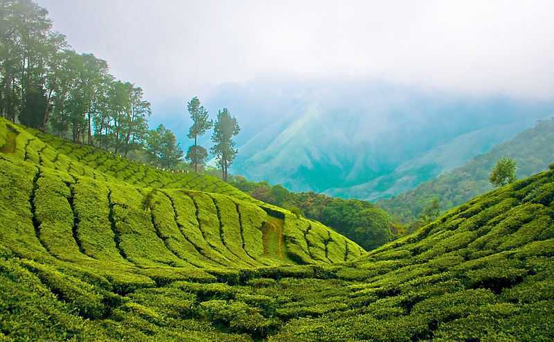





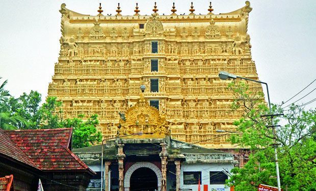
The Padmanabhaswamy Temple in Thiruvananthapuram, Kerala, is one of the richest and most mysterious temples in the world. Dedicated to Lord Vishnu, the temple is renowned not only for its intricate Dravidian architecture but also for its hidden treasures stored in underground vaults. Of the seven known secret vaults (labeled A to G), six have been opened and found to contain vast amounts of gold, jewels, and ancient artifacts. However, Vault B remains unopened and is shrouded in legend and spiritual significance. It is believed to be protected by powerful mantras and divine guardians, with many considering it forbidden to open. This mystery, combined with the temple’s immense spiritual and historical importance, adds to the deep intrigue surrounding Padmanabhaswamy Temple.
Alleppey is famous for its serene backwaters, traditional houseboat cruises, and scenic paddy fields
Central Kerala, around 53 km from Kochi.
November to February – pleasant weather, ideal for backwater trips.
A lesser-known hill station, Nelliyampathy
Palakkad district, about 60 km from Palakkad town.
September to May – cool and comfortable climate
The temple is famous for its architectural beauty and mysterious sealed vaults.
Thiruvananthapuram, the capital city of Kerala.
October to March – ideal weather for temple visits
Varkala is famous for its stunning cliffs overlooking the Arabian Sea, pristine beaches, and natural mineral springs.
About 40 km north of Thiruvananthapuram..
October to March – perfect for beach activities
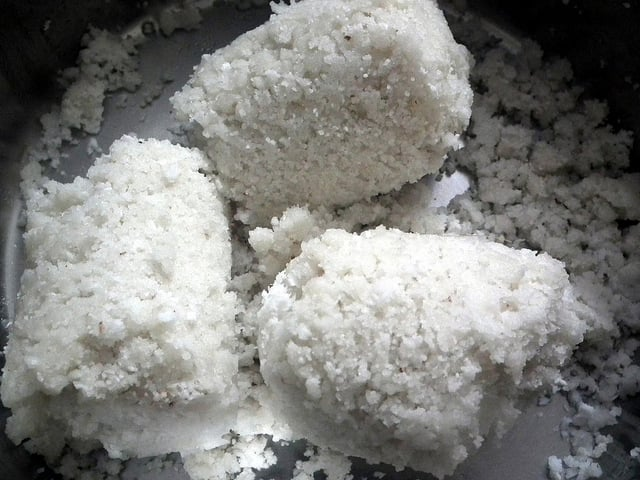
Traditional Food of Kerala
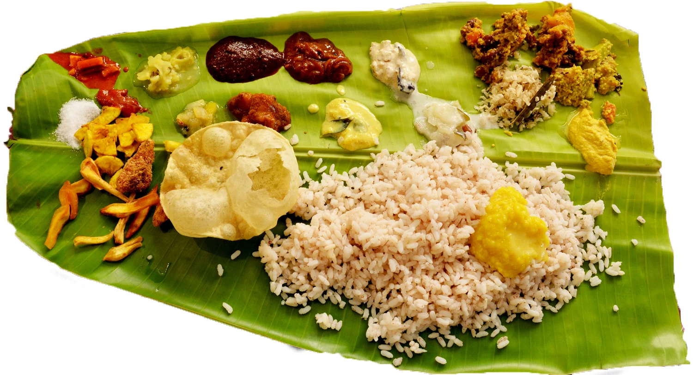
Famous Kerala Food
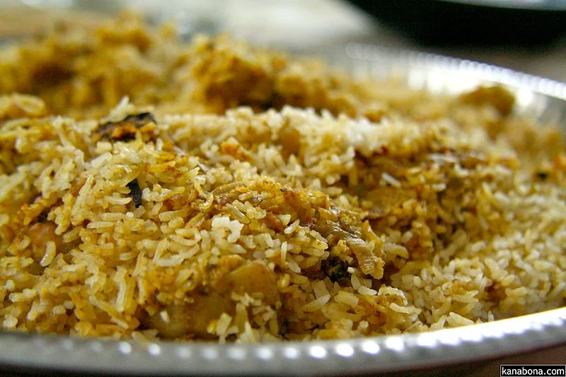
Thalassery the northernmost town in Kerala is a special biryani with relishing aroma and taste.
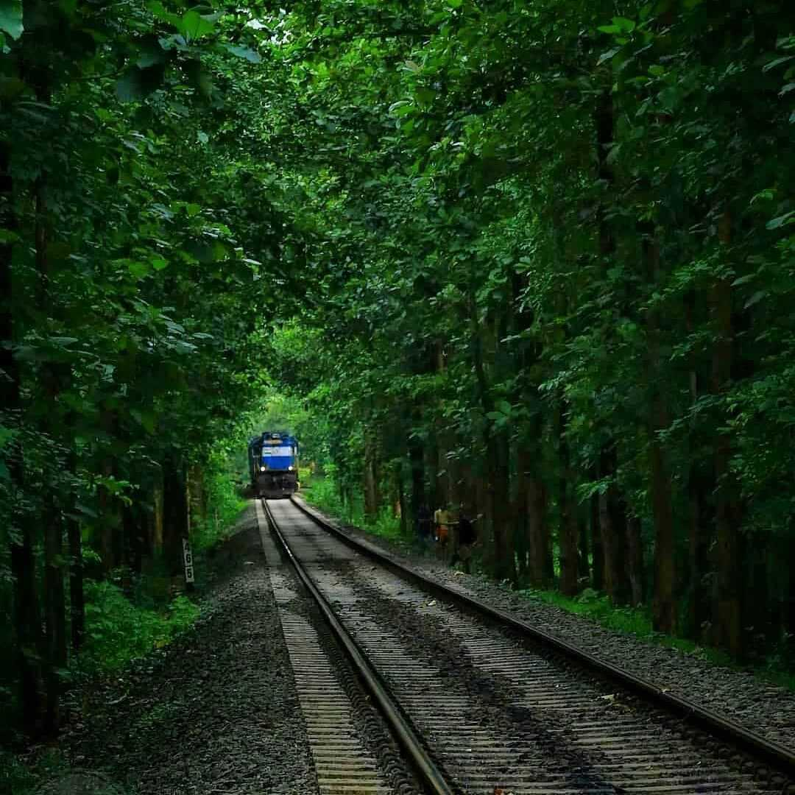
India’s Tourism, MI Road Delhi
📞 +91 141 2822863
📧 info@indiatourism.gov.in
🕘 Mon–Sat, 9:00AM–6:00PM